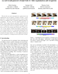

An end-to-end generative framework for video segmentation and recognition
H. Kuehne, J. Gall and T. Serre
Proc. of IEEE Winter Conference on Applications of Computer Vision (WACV), 2016

Abstract
We describe an end-to-end generative approach for the segmentation and recognition of human activities. In this approach, a visual representation based on reduced Fisher Vectors is combined with a structured temporal model for recognition. We show that the statistical properties of Fisher Vectors make them an especially suitable front-end for generative models such as Gaussian mixtures. The system is evaluated for both the recognition of complex activities as well as their parsing into action units. Using a variety of video datasets ranging from human cooking activities to animal behaviors, our experiments demonstrate that the resulting architecture outperforms state-of-the-art approaches for larger datasets, i.e. when sufficient amount of data is available for training structured generative models.
Code
Current version of the system is available on GitHub: https://github.com/hildekuehne/HTK_actionRecognition
If you use this code and/or data in your project, please cite:
@InProceedings{Kuehne16end,
author = {Hilde Kuehne and Juergen Gall and Thomas Serre},
title = {An end-to-end generative framework for video segmentation and recognition},
booktitle = {Proc. IEEE Winter Applications of Computer Vision Conference (WACV 16)},
year = {2016},
month = {Mar},
address = {Lake Placid},
}
Data
The evaluation was done on the following datasets: ADL, Olympic, ToyAssembly, CMU-MMAC, MPIICooking, 50Salads, Breakfast and CRIM13. We provide the reduced FV representation and the segmentation used (.xml and .txt). We also provide precomputed dense trajectories (using the code availlable here) or improved dense trajectories (using the code availlable here) on request, as long as they are not included at the dataset website. Please contact me (kuehne @ iai . uni-bonn . de) .
ADL
Website: http://www.cs.rochester.edu/u/rmessing/uradl/
Reduced FV: hist_dt_l2pn_c64.rar
Segmentation: segmentation.tar.gz
Dense Trajectories: on request
Olympic
Website: http://vision.stanford.edu/Datasets/OlympicSports/
Reduced FV: dt_l2pn_c64_pc64.tar.gz
Segmentation: segmentation.tar.gz
Improved dense Trajectories: on request
ToyAssembly
Website: http://www.cc.gatech.edu/~nvo9/sin/
Reduced FV: dt_l2pn_c64_pc64.rar
Segmentation: segmentation.tar.gz
Dense Trajectories: on request
CMU-MMAC
Website: http://kitchen.cs.cmu.edu
Reduced FV: dt_l2pn_c64_pc64.rar
Segmentation: segmenatation.tar.gz
Dense Trajectories: on request
MPIICooking
Website: Link
Reduced FV: hist_dt_l2pn_c64.rar
Segmentation: segmentation.tar.gz | segmentation.noBG.tar.gz
Dense Trajectories: Link
50Salads
Website: http://cvip.computing.dundee.ac.uk/datasets/foodpreparation/50salads/
Reduced FV: dt_l2pn_c64_pc64.rar
Segmentation: segmentation.tar.gz
For evaluation units are mapped to 13 classes.
Mapping file is here: 50salads_mapping_13classes.txt , 50salads_class_list.txt
Dense Trajectories: on request
Breakfast
Website: http://serre-lab.clps.brown.edu/resource/breakfast-actions-dataset/
Reduced FV: breakfast_data.tar.gz (~1GB)
Segmentation: segmentation_coarse.tar.gz
Dense Trajectories:
Splitted in four: dense_traj_all_s1.tar.gz (~37GB) dense_traj_all_s2.tar.gz (~57GB) dense_traj_all_s3.tar.gz (~42GB) dense_traj_all_s4.tar.gz (~75GB)
CRIM13
Website: http://www.vision.caltech.edu/Video_Datasets/CRIM13/CRIM13/Main.html
Reduced FV: dt_l2pn_c64_pc64.rar
Segmentation: segmentation.tar.gz
Dense Trajectories: on request